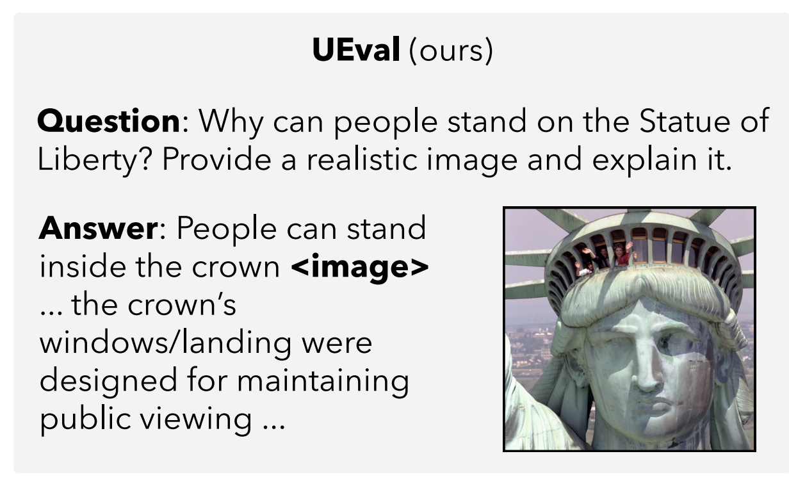
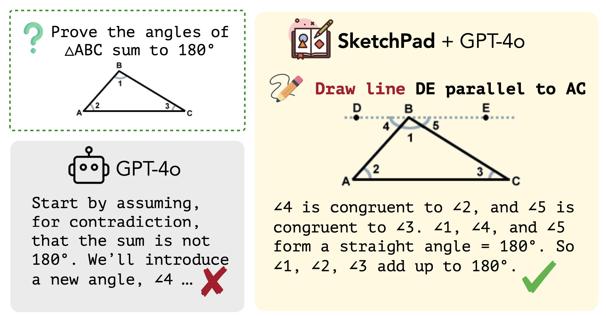
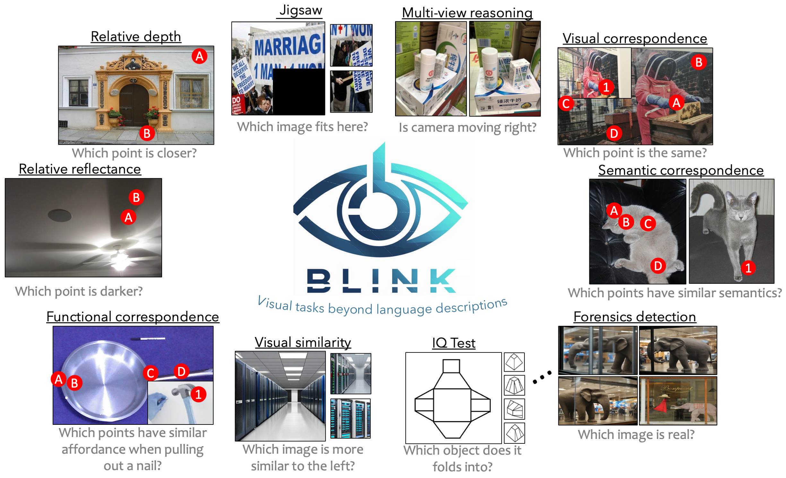
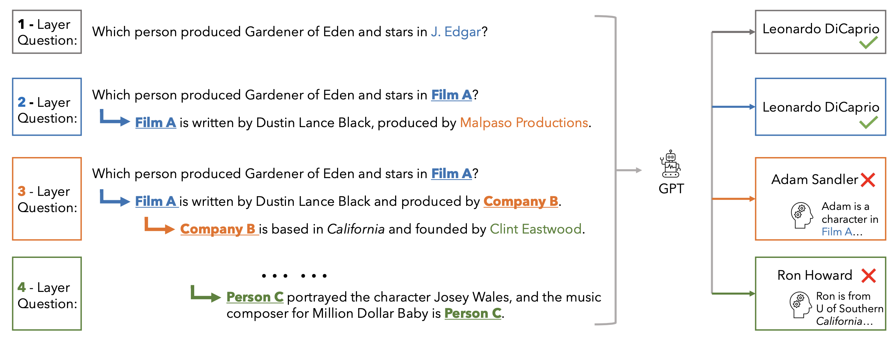
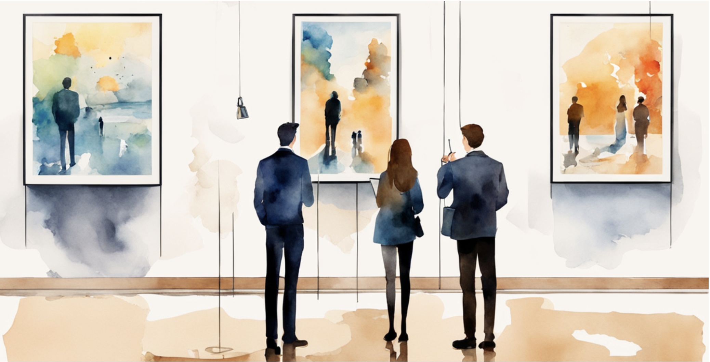
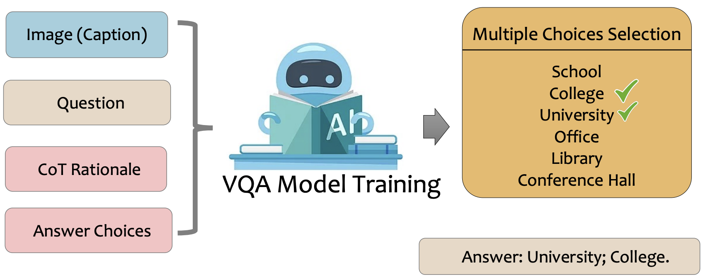
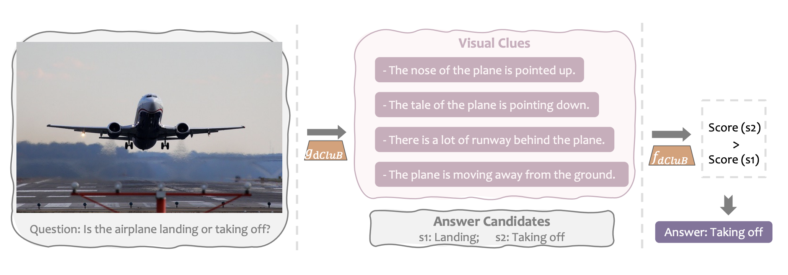
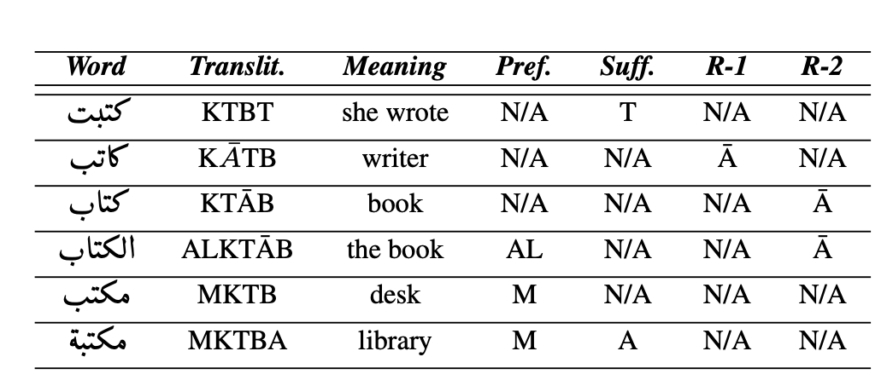

📑 Research Projects








ImagenHub: Standardizing the evaluation of conditional image generation models
ICLR 2024


Dynamic Clue Bottlenecks: Towards Interpretable-by-Design Visual Question Answering
Arxiv 2023


Constrained sequence-to-sequence semitic root extraction for enriching word embeddings
WANLP @ ACL 2019